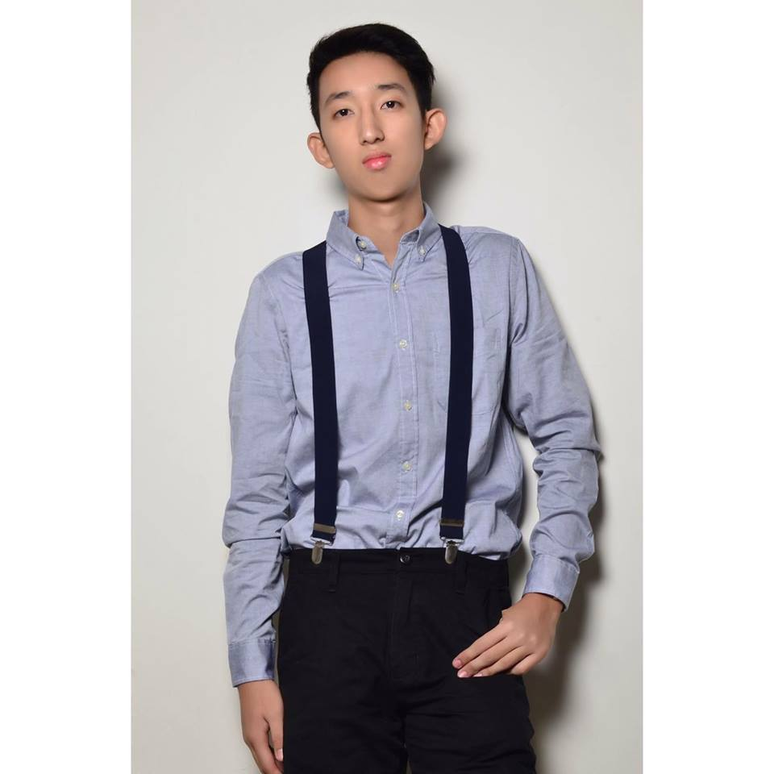

CHANO

Name: Christian Garcia Encabo
Birthday: August 29, 1996
He is the second eldest and middle child, 21 years old, among us three. He graduated with a degree in Bachelor of Science in International Hospitality Management with Specialization in Hotel and Restaurant Administration at Lyceum of the Philippines University.
He had work experience in J.Co for 6 months and is currently applying for a job.
BACK
|